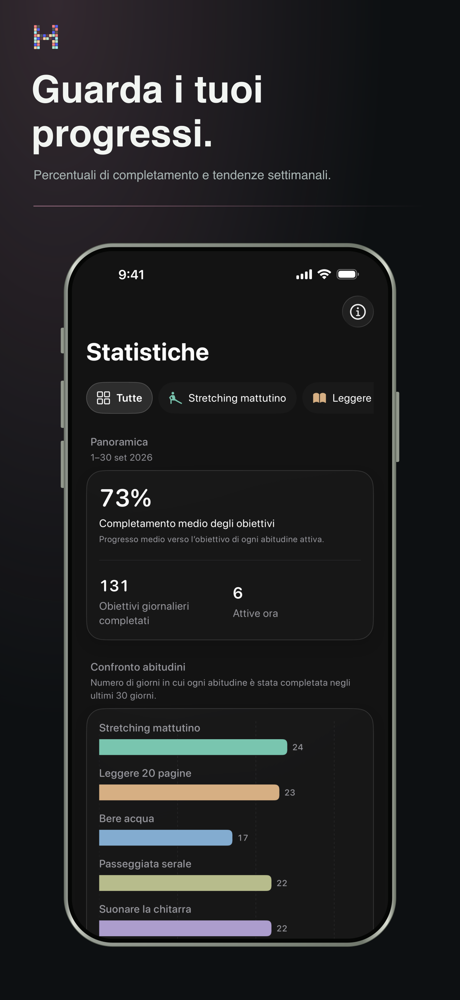

Schemi, non pressione
Capisci cosa ti aiuta a tornare.
Osserva serie, percentuali di completamento e schemi a lungo termine senza trasformare la routine in un foglio di calcolo.
- Serie attuale e migliore
- Tendenze e distribuzione dei completamenti
- Contesto settimanale, mensile e annuale